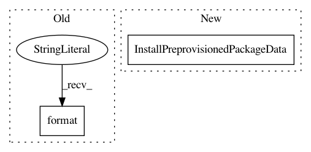

0beaa77eb18c11ccf1a12dc72f09274b3279d569,perfkitbenchmarker/linux_packages/glibc.py,,_Install,#Any#,26
Before Change
vm.RemoteCommand("cd {0} && mkdir binutils".format(INSTALL_DIR))
vm.RemoteCommand(
"cd {0} && "
"wget http://ftp.gnu.org/gnu/binutils/binutils-2.30.tar.gz".format(
BINUTILS_DIR))
vm.RemoteCommand("cd {0} && tar xvf {1}".format(BINUTILS_DIR, BINUTILS_TAR))
vm.RemoteCommand("cd {0} && mkdir binutils-build && "
"cd binutils-build/ && "
After Change
vm.Install("gcc5")
vm.RemoteCommand("cd {0} && mkdir glibc".format(INSTALL_DIR))
vm.InstallPreprovisionedPackageData(
PACKAGE_NAME, [GLIBC_TAR], GLIBC_DIR)
vm.RemoteCommand("cd {0} && tar xvf {1}".format(GLIBC_DIR, GLIBC_TAR))
vm.RemoteCommand(
"cd {0} && mkdir glibc-build && cd glibc-build && "
"../glibc-{1}/configure --prefix=/usr/local/glibc --disable-profile "
In pattern: SUPERPATTERN
Frequency: 3
Non-data size: 2
Instances
Project Name: GoogleCloudPlatform/PerfKitBenchmarker
Commit Name: 0beaa77eb18c11ccf1a12dc72f09274b3279d569
Time: 2019-07-19
Author: yuyanting@google.com
File Name: perfkitbenchmarker/linux_packages/glibc.py
Class Name:
Method Name: _Install
Project Name: GoogleCloudPlatform/PerfKitBenchmarker
Commit Name: 37855a68ddfa4c9b4767b71878f2a5148c1d011f
Time: 2019-07-22
Author: yuyanting@google.com
File Name: perfkitbenchmarker/linux_packages/speccpu2017.py
Class Name:
Method Name: Install
Project Name: GoogleCloudPlatform/PerfKitBenchmarker
Commit Name: 6cc34eb1006d274381faa7bd480cefdb4141bc7a
Time: 2019-07-29
Author: yuyanting@google.com
File Name: perfkitbenchmarker/linux_packages/scimark2.py
Class Name:
Method Name: Install